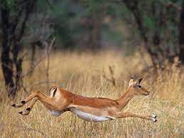

Ймовірно найкраще місце для знайомств з природою країни. Ліс Свазі Усуту - 65 тис. Гектарів плантацій місцевих і привізних деревних порід, надає дах древнім племенам бушменів з з незвичайними селами. Також тут незліченну кількість водоспадів і лісових стежок, що проходять по самих мальовничих місцях.
18 тисяч гектарів абсолютно незайманого і нечасто відвідуваного людьми лісу, хоча він є дуже красиву, сильно пересічену місцевість. Це скоріше навіть маленька природна країна в передгір'ях гір Лебомбо. Тут ростуть рідкісні різновиди рослин-сукулентів, цикада і альпійський мак росте серед лісів залізного дерева, гієни і леопарди водяться тут удосталь також як і гіпопотами, саманго, крокодили, різноманітні антилопи, зебри і більш ніж 350 різновидів птахів. Оскільки тут були виявлені вироби кам'яного віку, то існує безліч розрізів і туристичних археологічних стежок
